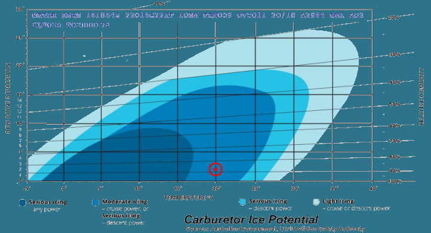
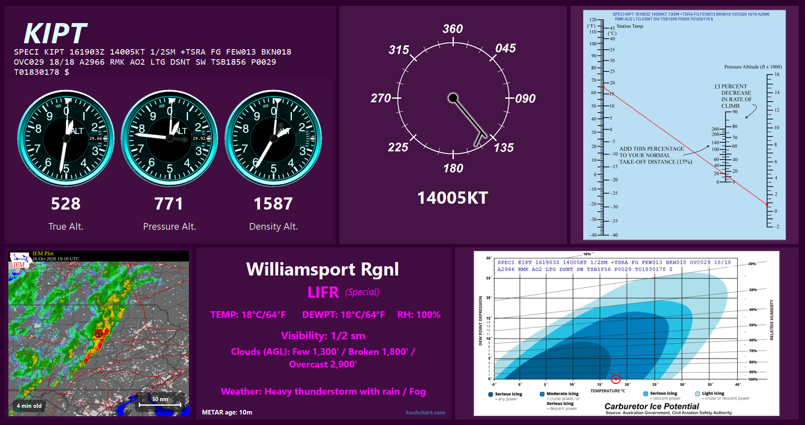
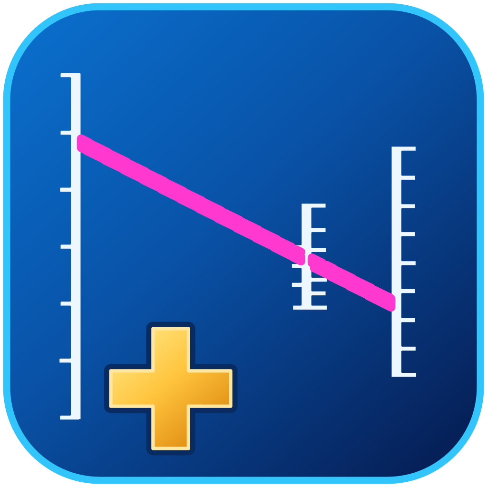

See what altitude does to your takeoff.
Compare density-altitude effects as estimated by Koch, Imeson, DENALT and Embree methods.
DENSITY ALTITUDE INCREASES →
TAKEOFF DISTANCE
Get a clearer picture of how density altitude, wind, and runway conditions affect light-aircraft takeoff and climb performance.
01 / THE BIG PICTURE
At high-elevation airports, a warm day can make a familiar airplane perform very differently. KochChart turns that concept into practical, visual comparisons you can explore and learn from.
Originally inspired by the classic Koch Chart nomograph, the software now brings together multiple estimation methods, METAR weather, and clear graphical displays.
02 / EXPLORE THE TOOL
From atmospheric conditions to runway winds, KochChart makes the relationships easier to visualize.
Compare density-altitude effects as estimated by Koch, Imeson, DENALT and Embree methods.
Retrieve current airport weather observations and explore their effects on calculated conditions.
Explore headwind, tailwind, crosswind, runway slope and runway condition effects, plus carburetor icing potential.

Click to learn more about carb icing chartsDisplayView combines weather information, density altitude, performance graphics, carb ice potential and local radar imagery when available.

The performance bar graphic is illustrative; the DisplayView image is an actual application screenshot.
03 / CHOOSE YOUR VERSION
Start free or add an always-visible view of your airport conditions.
The core density-altitude awareness tool for pilots and aviation enthusiasts.

KOCHCHART PLUSEverything in KochChart, plus a comprehensive, automatically updating DisplayView.
KochChart currently runs on Windows. KochChart Plus can be tried without registering; unregistered use includes a reminder screen.
04 / RECENT IMPROVEMENTS
Recent improvements make KochChart easier to read, update, and use in a wider range of aviation environments.
KochChart Plus radar coverage expanded beyond the contiguous United States, with map overlays and clearer no-data reporting.
Recent development has focused on METAR readability, scaling across monitor sizes, and clearer presentation of airport conditions.
In-app version checks, release information, and an installer download workflow make it simpler to keep up with new releases.
05 / READY TO EXPLORE?
Download the latest release and discover how much conditions can change light-aircraft performance.
06 / WHY KOCHCHART?
KochChart began as a digital interpretation of the traditional Koch Chart and evolved into a broader educational tool to illustrate how atmospheric and runway conditions influence light aircraft performance.
It's designed to support learning and awareness—not to replace approved aircraft performance data or required preflight planning.
Plus registration information →Not for flight planning or operational decisions. KochChart does not satisfy the requirements of FAR 91.103 or other regulatory requirements. Always consult the approved Airplane Flight Manual (AFM) or Pilot's Operating Handbook (POH) for your aircraft's performance calculations. KochChart is intended for light, single-engine, normally aspirated piston aircraft and does not apply to all aircraft types.
Software is provided for personal, non-commercial educational use without warranty. Redistribution, modification and commercial use require the author's prior written consent. Review the full terms on the current KochChart website before using the software.